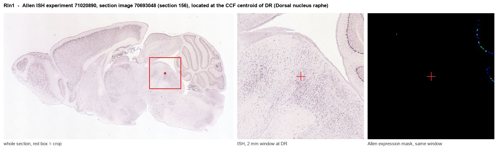
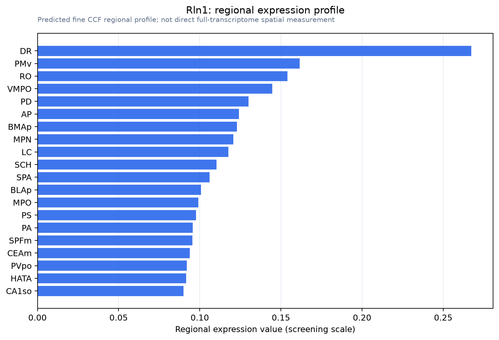

Rln1
Spatial tier: RESTRICTED · Class: OTHER · Top region: DR (Dorsal nucleus raphe) · Positive regions: 25/554
43.1Discovery Score
34.4Targetability Score
CEvidence grade C
What this means: Rln1: fine CCF profile is restricted toward DR (top regions: DR, PMv, RO, VMPO, PD; 25 positive regions); direct spatial validation is still required.
Function in DR: evidence, prediction, innovation
- Gene function
- Rln1 encodes mouse relaxin-1, the orthologue of human relaxin-2. It is an insulin-superfamily peptide hormone with an A and a B chain joined by disulphide bonds, acting on the leucine-rich-repeat GPCR RXFP1 to raise cAMP. It is best known as a reproductive and connective-tissue hormone that drives collagen remodelling, vasodilation and cardiac and renal adaptation to pregnancy; the therapeutic form is serelaxin.
- Region function
- The dorsal raphe nucleus is the largest serotonergic cell group in the brain, projecting broadly to cortex, striatum and limbic structures; it shapes mood, patience and reward processing, arousal state and stress responses, and also contains GABAergic, dopaminergic and glutamatergic neurons.
- Published in this region
- inferred No region-specific literature found. The relaxin-family peptide that is genuinely expressed in this part of the brainstem is relaxin-3 (Rln3), whose principal source is the nucleus incertus in the pontine central grey immediately ventral and caudal to the dorsal raphe, from which it signals through RXFP3 to modulate arousal, stress and feeding (Smith et al. 2011; Olucha-Bordonau et al. 2018).
- Predicted function
- Prediction: if relaxin-1 peptide is genuinely produced by dorsal raphe neurons it would most plausibly act as a locally released RXFP1 agonist raising cAMP in neighbouring serotonergic and GABAergic cells and in the dense local vasculature, providing a slow neuromodulatory and vasodilatory signal that links reproductive or cardiovascular state to serotonergic tone. Local serelaxin infusion into DR is predicted to increase serotonergic firing and reduce anxiety-like behaviour in the elevated plus maze, while Rln1 knockout mice should show blunted DR responses to reproductive-state manipulation; the first and most important experiment, however, is simply to confirm the transcript with RNAscope, given that relaxin-3 is the far more likely source of any relaxin-family signal here.
- Innovation
- ★★★★☆ 4/5 No one has examined relaxin-1 in the dorsal raphe and the reagents exist, but the strong likelihood that the signal reflects the adjacent relaxin-3 system lowers the expected novelty of a real finding.
- Tools
- Rln1 knockout mice; RXFP1 agonists relaxin-2/serelaxin and the small molecule ML290; RXFP1 antagonists and anti-relaxin antibodies; for the related system, Rln3-Cre mice and the RXFP3 antagonist R3(B1-22)R; Pet1-Cre and Sert-Cre for DR serotonergic restriction.
- References
Direct evidence located at the region

Allen ISH experiment 71020890, section image 70693048 (section 156): the section that contains the CCF centroid of Dorsal nucleus raphe according to the Allen image-to-atlas alignment (reference_to_image), with a 2 mm window around that point. Left: whole section, red box = window. Middle: ISH signal. Right: Allen's expression-mask view of the same window. open this image in the Allen viewer
Look it up yourself: Allen Mouse Brain ISH for Rln1Allen reference atlas: DR (structure 872)ABC Atlas MERFISH viewer(in the ABC Atlas choose dataset MERFISH-C57BL6J-638850-CCF, colour cells by gene "Rln1" or by parcellation_substructure "DR")All genes confined to DR + 3-D brain
Direct spatial evidence
MERFISH REGION LOCATOR

Regional expression figure

Predicted WMB × fine-CCF profile; not direct full-transcriptome spatial measurement.
Spatial profile
Evidence and specificity
- Evidence status
- PREDICTED_FINE
- Direct sources
- None; predicted localization only
- Exclusive threshold
- 12 positive regions out of 554
- Spatial specificity
- 0.286
- Top-region fraction
- 0.059
- Filter status
- PASS
Interpretation limits
- Cell-type-to-region projection is imputed expression, not direct spatial measurement.
- Adult reference atlases do not establish stability across age, sex, strain, state, or disease.
- Transcript abundance does not guarantee protein abundance or genetic-tool performance.